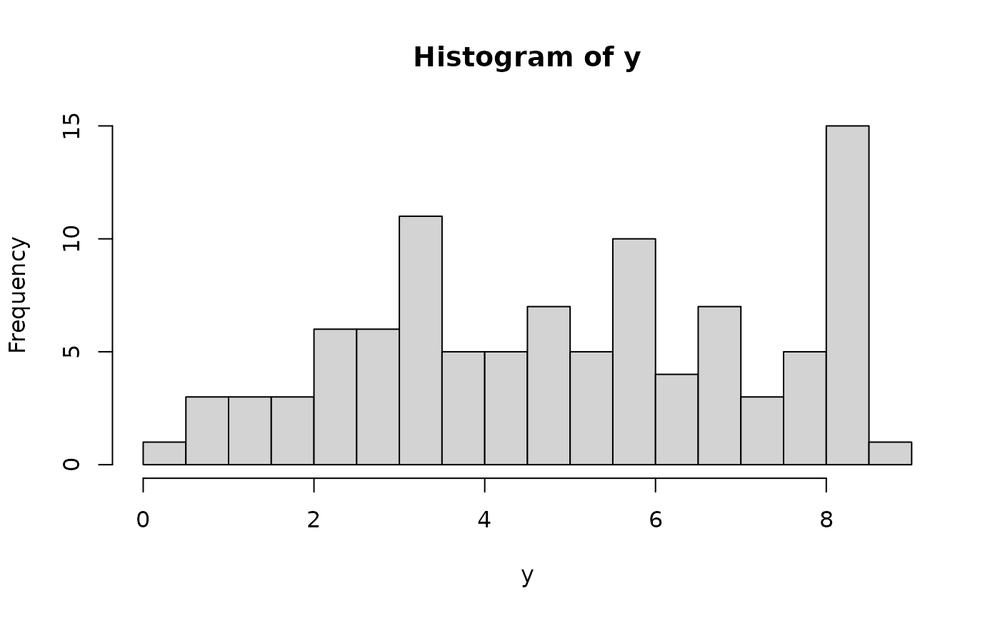

MCMC sampling for Bayesian linear regression with a (known or unknown) Box-Cox transformation. A g-prior is assumed for the regression coefficients.
Usage
blm_bc(
y,
X,
X_test = X,
psi = length(y),
lambda = NULL,
sample_lambda = TRUE,
nsave = 1000,
nburn = 1000,
nskip = 0,
verbose = TRUE
)Arguments
- y
n x 1vector of observed counts- X
n x pmatrix of predictors- X_test
n_test x pmatrix of predictors for test data; default is the observed covariatesX- psi
prior variance (g-prior)
- lambda
Box-Cox transformation; if NULL, estimate this parameter
- sample_lambda
logical; if TRUE, sample lambda, otherwise use the fixed value of lambda above or the MLE (if lambda unspecified)
- nsave
number of MCMC iterations to save
- nburn
number of MCMC iterations to discard
- nskip
number of MCMC iterations to skip between saving iterations, i.e., save every (nskip + 1)th draw
- verbose
logical; if TRUE, print time remaining
Value
a list with the following elements:
coefficientsthe posterior mean of the regression coefficientsfitted.valuesthe posterior predictive mean at the test pointsX_testpost_theta:nsave x psamples from the posterior distribution of the regression coefficientspost_ypred:nsave x n_testsamples from the posterior predictive distribution at test pointsX_testpost_g:nsaveposterior samples of the transformation evaluated at the uniqueyvaluespost_lambdansaveposterior samples of lambdapost_sigmansaveposterior samples of sigmamodel: the model fit (here,blm_bc)
as well as the arguments passed in.
Details
This function provides fully Bayesian inference for a
transformed linear model via MCMC sampling. The transformation is
parametric from the Box-Cox family, which has one parameter lambda.
That parameter may be fixed in advanced or learned from the data.
Note
Box-Cox transformations may be useful in some cases, but
in general we recommend the nonparametric transformation (with
Monte Carlo, not MCMC sampling) in sblm.
Examples
# Simulate some data:
dat = simulate_tlm(n = 100, p = 5, g_type = 'step')
y = dat$y; X = dat$X # training data
y_test = dat$y_test; X_test = dat$X_test # testing data
hist(y, breaks = 25) # marginal distribution

# Fit the Bayesian linear model with a Box-Cox transformation:
fit = blm_bc(y = y, X = X, X_test = X_test)
#> [1] "0 seconds remaining"
#> [1] "Total time: 0 seconds"
names(fit) # what is returned
#> [1] "coefficients" "fitted.values" "post_theta" "post_ypred"
#> [5] "post_g" "post_lambda" "post_sigma" "model"
#> [9] "y" "X" "X_test" "psi"
round(quantile(fit$post_lambda), 3) # summary of unknown Box-Cox parameter
#> 0% 25% 50% 75% 100%
#> 0.000 0.004 0.010 0.019 0.089